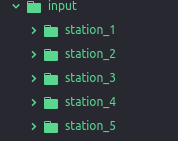

Tutorials & Usage¶
Here is a presentation of an example as to how to use the current state of the project.
Note
Note: This project is currently tested in Python3.7 and is also being developed using Python3.7
Input: * The dump1090 mlat output from an raw IQ recording/file.
Arguments used in dump1090:
| --mlat | So that the output is in AVR format |
| --ifile | To load an IQ file |
| --gain | By default this value is set to (-10) |
A typical ADS-B 112 bit frame in AVR format:
@0000000929E28e3ff6e6990c4684000011548194;
AVR format is identified by ‘@’ and the ‘;’ at the beginning and at the end respectively.
The output from dump1090 which serves as our input should be named in the following manner:
[date]_[station_name]_[start_time_of_recording_epoch]_frame.dat
Example of a typical file name:
20190206_station1_1566723047_frame.dat
Such of these files should be ordered in the following manner in a folder named ‘input’ in the home directory:
Update the coordinates of each station in the planespotting/gs_data.json file
{
"station_1":{
"lat":latitude,
"lon":longitude,
"alt":altitude
},
"station_2":{
"lat":latitude,
"lon":longitude,
"alt":altitude
},
"station_3":{
"lat":latitude,
"lon":longitude,
"alt":latitude
}
}
Note
‘latitude’ and ‘longitude’ should be in degrees.
Now run the script by using this command in the console:
python3 main.py
While the script runs, it will save all the decoded frames and the data in the ‘data’ folder in the home directory.